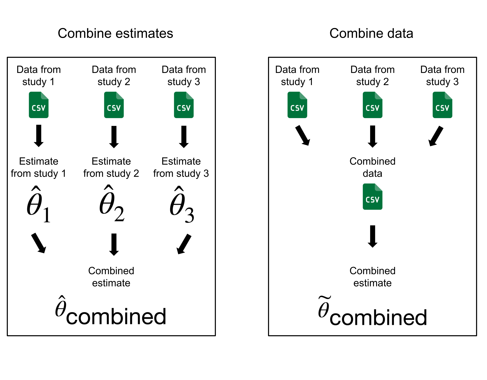
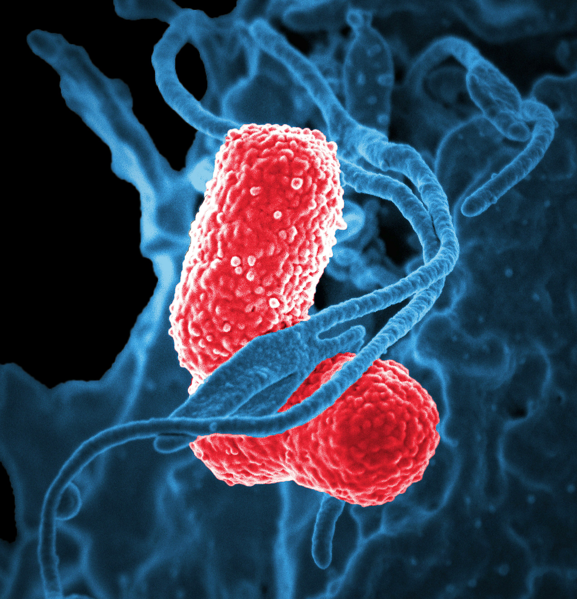

Context
What is a microbiome?
A microbiome is a collection of microorganisms that live in an environment. One commonly studied microbiome is the human gut microbiome. The bacteria that live in our gut help regulate our metabolism, digest fiber, protect us against pathogens, and perform other important roles in our health [@han2026host]. Studies have shown associations between changes to the gut microbiome and many diseases, including diabetes, autoimmune diseases, and Alzheimer’s disease.
to-do: add image of collection of microbes and/or image of digestive system


Much of the gut microbiome composition is determined at birth and in early life, and the infant gut microbiome has implications for health later in life [@wang2021metagenomic]. Therefore, scientists are interested in understanding more about the factors that shape the infant gut microbiome. One question of interest is how similar the gut microbiomes are between infants and their mothers, and how this changes over time. In order to address this question, several longitudinal studies have been conducted to collect samples from pairs of infant and mother longitudinally. Sequencing microbiome samples is expensive, and therefore each study is limited in the number of samples they can collect. Want et al. conducted a meta-analysis of eight of these studies, using this large data set to compare gut microbiome composition (which microbes are there?) and function (what are the microbes doing?) between infants and mothers.
What is a meta-analysis?
A meta-analysis is the analysis of data from a collection of studies targeting a common research question [@dersimonian1986meta]. Ideally these studies would have similar participants and study protocols. A meta-analysis may be beneficial when the original studies have samples sizes that are too small to provide enough evidence for significant results. Additionally, meta-analyses provide opportunities to reuse data, which often require a large amount of effort and funding to collect. Meta-analyses can also be used to generate a consensus result from a set of studies. However, meta-analyses must be conducted with care, as combining data from studies with different participant populations and different study designs can lead to misleading results.
There are two general approaches to performing meta-analyses [@andrade2025primer]. In the first approach, estimates or other summaries from each study are combined in order to generate a summary from the set of studies. One benefit of this approach is that the original data from each study are not needed. However, original studies can only be combined if they estimate the same summary of their population (for example, a difference in means between two groups or an odds ratio). Additionally, the data would need to be analyzed in the same way for each study (for example, the same variables would need to be adjusted for). In the second approach, data from each of the studies are combined and re-analyzed jointly, accounting for the study from which each observation originated. A benefit of this approach is that new research questions can be asked, as long as the relevant data exist from each study. However, it requires accessing the raw data from each study.
@wang2021metagenomic take the second approach, using the raw data from eight longitudinal studies of infant and mother gut microbiomes, processing the datasets with a unified protocol, and conducting analyses on the combined dataset. When they fit models to the data, they “block” by study, which means they include a term in their models that accounts for which study each participant came from, so that results are not confounded by differences between study cohorts. However, the validity of this approach depends on how comparable the original studies are. In particular, differences in sample size and longitudinal sampling schedules may affect the interpretation of results. This motivates our exploration of the similarities and differences between the various study cohorts before the data were pooled. We want to understand how comparable these studies are, both in terms of sample size (how many samples are in each study?), and in terms of their longitudinal sampling study design (when in the lifespan of the infants did they take samples?).